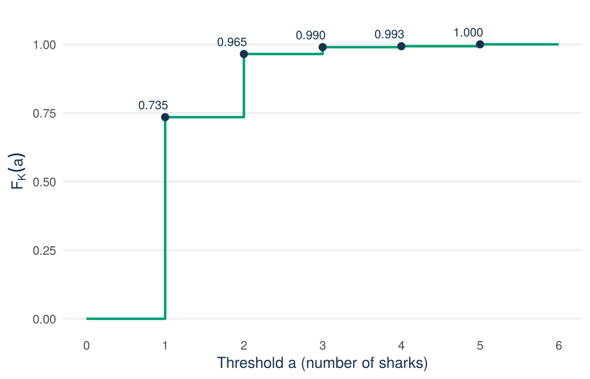
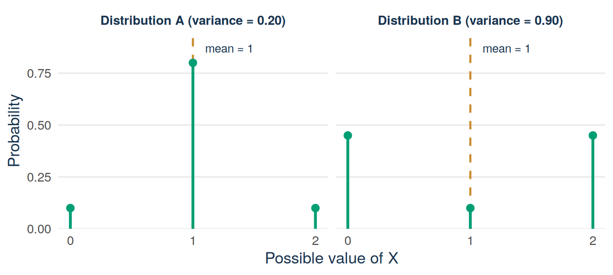

Lecture 3: Discrete distributions, expectation, and variance
By the end of Lecture 3, you can
describe a discrete variable with its probability and cumulative distributions,
calculate and interpret the expected value of a discrete variable,
measure spread with variance and standard deviation, also after rescaling,
keep model expectations and variances apart from sample means and variances.
Driving question
A deal is only the start. Will you work with one investor who gives you full attention, or share your company with several? Before you plan, you want two numbers: what to expect, and how much reality can differ from it. In other words: what is the expected outcome, and what is the variance of the outcome, the measure of risk that this lecture introduces?
If your pitch ends in a deal, how many sharks will you work with, and how much does that number differ from deal to deal?
Before class
Do all the preparation below before class.
Video preparation
Watch these short videos from MIT OpenCourseWare, Introduction to Probability, before class. Be ready to explain what \(p_X(x)\) measures, what an expected value is, and what the variance measures.
The videos explain key ideas in another way and can use a different notation. The lecture material and its notation always come first.
Shark Tank dataWarm up. Lecture 2 ended with random variables for the experiment that selects one record uniformly at random. Define \(X=1\) if the selected pitch reached an on-air deal and \(X=0\) otherwise. Now select one of the 882 deals at random instead. Define \(K\) as the number of sharks in the selected deal (number_sharks_in_deal).
What are the possible values of \(X\) and of \(K\)?
Do these possible values tell us how likely each value is?
Check your preparation
\(X\) can take the values 0 and 1. \(K\) can take the values 1, 2, 3, 4, and 5: every deal has at least one shark, and the panel has five.
No. The support lists the possible values. A probability distribution must also give a probability to each value. This lecture adds that step.
Predict. Answer this question before you come to class. Option A pays €100 for sure. Option B pays €0 or €200, each with probability one half. Which option has the higher expected payoff, and which one is riskier? Choose one answer for each part: A, B, or equal. You find the answer in the section on variance and standard deviation in the lecture material.
Lecture material
Start with a founder’s question
Shark Tank data Lecture 2 gave a probability to a single event, such as deal or no deal. Many business questions are about a number with several possible values instead. Suppose your pitch ends in a deal. Will you work with one investor who gives you full attention, or with a group of sharks who share the deal? The Shark Tank file records the number of sharks in each deal in the variable number_sharks_in_deal. The code below keeps the 882 records with an on-air deal, counts the deals by the number of sharks, and then turns the counts into shares of all deals:
The first output gives the counts. Of the 882 deals, 648 have one shark, 203 have two, 22 have three, 3 have four, and 6 have five. The second output divides each count by 882. As shares: 0.735, 0.230, 0.025, 0.003, and 0.007. So almost three in four deals are made with a single shark, and deals with three or more sharks are rare.
Four questions, answered from the shares
How likely is a deal with exactly one shark? Read it from the shares: 73.5%.
How likely is a deal with at most two sharks? Add the first two shares: 73.5% + 23.0% = 96.5%.
How many sharks should you expect? Multiply each number by its share and add the results: \[1\times0.735+2\times0.230+3\times0.025+4\times0.003+5\times0.007\approx1.32.\] No deal has 1.32 sharks. The section on expectation explains how to read such a number.
How much do deals differ from that number? Not much: most deals have one shark and nearly all others have two. The section on variance teaches how to summarise this spread in one number.
Question 4 is about risk. The money choice in the Lecture 1 survey had the same average payoff for all three options, and the options differed only in how far a single result could lie from that average. The variance turns this idea into a number.
Each of the four answers uses a tool that has a name. The list of shares is a probability mass function. The running total in question 2 is a cumulative distribution function. The weighted average in question 3 is an expected value. The spread in question 4 is measured by the variance and the standard deviation. These four tools are introduced below, one section each, starting with the list of shares.
Shark Tank data A random variable tells us which numerical values we may observe. Its distribution adds the missing information: how the probability is divided between those values.
For a discrete random variable \(X\), the probability mass function (PMF) is
\[p_X(x)=P(X=x).\]
Read this notation in parts:
Symbol
Meaning
\(X\)
the random variable
\(x\)
one possible numerical value
\(p_X\)
the PMF belonging to \(X\)
\(p_X(x)\)
the probability that \(X\) equals exactly \(x\)
The probability of one value is also called its probability mass, or mass for short. A valid PMF must meet two rules:
\[
p_X(x)\ge 0\quad\text{for every }x,
\qquad
\sum_{x\in\mathcal X}p_X(x)=1,
\]
where \(\mathcal X\) is the support of \(X\). The first rule prevents negative probability. The second says that one of the possible values must occur.
Example 3.1 (Worked example: the deal-indicator PMF, checked) In the uniform selection experiment from Lecture 2, the deal indicator \(X\) has support \(\{0,1\}\). The Shark Tank file has 882 deals among 1,441 records, so 559 records have no deal. The PMF is
R can do the same calculation in three steps. First, mean() of the 0/1 column deal_on_show gives the share of records with a deal, which we store as p_hat for later use. Second, table() counts the records with the values 0 and 1, and prop.table() divides each count by the 1,441 records. Third, sum() adds the two masses to check the second rule.
0: no on-air deal 1: on-air deal
0.3879251 0.6120749
sum(deal_pmf)
[1] 1
The first output is the PMF: 0.388 for no deal and 0.612 for a deal, the same two fractions as in the worked example. The second output, 1, confirms that the masses add up to 1. In words: a pitch drawn at random from the file reached a deal with probability 0.612, so about three in five recorded pitches ended in a deal. Figure 3.1 draws this PMF.
Figure 3.1: The PMF of the deal indicator X: two probability masses, at 0 (no on-air deal) and at 1 (on-air deal). The labels show how each height is calculated.
The deal indicator has only two possible values, so its PMF has only two masses. Most business quantities have more possible values. For the number of sharks \(K\) in a randomly selected deal, the PMF gives each number its share of the 882 deals. The code below takes the counts of the opening section, divides them by 882 with prop.table(), rounds them to three decimals, and checks that they add up to 1:
These are the shares from the opening section, now read as probabilities. If you draw one deal at random, the probability that it has exactly one shark is 0.735, and the probability that it has five sharks is 0.007, less than one in a hundred. Both rules hold: every mass is non-negative and the sum is 1. Figure 3.2 draws this PMF.
Figure 3.2: The PMF of the number of sharks in a randomly selected deal: five separated probability masses, one per possible value. The label above each mass shows its calculation: the number of deals with k sharks divided by all 882 deals.
The probability mass above 1 in Figure 3.2 has height \[p_K(1)=P(K=1)=\frac{648}{882}\approx0.735.\] Almost three quarters of the probability sits on one value. The masses for three, four, and five sharks are so small that their bars are hard to see. The label above each bar shows how its height is calculated: the number of deals with that many sharks, divided by all 882 deals. The graph shows the PMF as separate probability masses, because \(K\) can take only the listed discrete values. The term probability density function (PDF) is used only for continuous random variables. Lecture 6 introduces it.
The PMF shows the whole shape of a distribution at a glance: which values are possible and which of them are likely. Many practical questions, however, ask about a range of values, such as “at most two sharks”. The next tool answers such questions directly.
A CDF accumulates probability up to a threshold
Shark Tank data The PMF asks about one exact value. The cumulative distribution function (CDF) asks how much probability lies at or below a chosen threshold (a cut-off value). Why do we need a second tool? Many decisions depend on a threshold. A founder who can handle at most two investors asks for \(P(K\le 2)\). A bank asks how likely sales stay below the level needed to repay a loan. With the PMF alone, you must add up several masses for every such question. The CDF stores these sums once, so one reading answers the question. The two tools carry the same information and are used together. The PMF shows which single values are likely. The CDF answers questions about “at most”, “at least”, and “between”. From Lecture 6 on, for continuous variables, almost every probability is read from a CDF.
Imagine moving from left to right across the PMF and keeping a running total.
For any random variable \(X\),
\[F_X(a)=P(X\le a).\]
Here \(a\) is a threshold, not necessarily a value in the support. For a discrete random variable,
\[F_X(a)=\sum_{x\le a}p_X(x).\]
Definition
Probability mass function (PMF) and cumulative distribution function (CDF). The PMF, \(p_X(x)=P(X=x)\), gives the probability that \(X\) equals exactly the value \(x\). The CDF, \(F_X(a)=P(X\le a)\), gives the probability that \(X\) is at or below the threshold \(a\).
Try it yourself: build the running total
The lab below shows the PMF of the number of sharks on top and the CDF below it. Move the slider to change the threshold \(a\). Every probability mass at or below \(a\) turns green and is added to the running total. The lower panel draws the CDF up to the current threshold, and the text below the panels shows the sum.
Running-total lab: from PMF to CDF
The CDF rises only where the threshold passes a possible value. Between two possible values the running total stays the same.
Example 3.2 (Worked example: F(2) for the number of sharks, by hand) “\(K\le 2\)” contains the deals with one or two sharks, so add the first two probability masses of the PMF. Of the 882 deals, 648 have one shark and 203 have two:
The table has one row per possible number of sharks. The column count gives the number of deals, pmf divides it by 882, and cdf adds up the pmf column from the top down to the current row. The cdf column grows from 0.735 to 0.965, 0.990, 0.993, and finally 1. Read the row for three sharks as an example: 99.0% of the deals have at most three sharks. The last value is 1 because every deal has at most five sharks.
See the R code for this figure
library(ggplot2)sharks <-read.csv("data/shark_tank_teaching.csv", stringsAsFactors =FALSE)deals <-subset(sharks, deal_on_show ==1)sharks_pmf <-prop.table(table(deals$number_sharks_in_deal))cdf_df <-data.frame(threshold =as.numeric(names(sharks_pmf)),cdf =cumsum(as.numeric(sharks_pmf)))# For the line only: a flat part at 0 before one shark and at 1 after fivestep_df <-rbind(data.frame(threshold =0, cdf =0), cdf_df,data.frame(threshold =6, cdf =1))ggplot(cdf_df, aes(x = threshold, y = cdf)) +geom_step(data = step_df, linewidth =1, colour ="#009E73") +geom_point(size =2.6, colour ="#17324D") +geom_text(aes(label =sprintf("%.3f", cdf)), vjust =-0.9, hjust =0.9,size =3.6, colour ="#17324D") +scale_x_continuous(breaks =0:6) +scale_y_continuous(limits =c(0, 1.08), breaks =seq(0, 1, 0.25)) +labs(x ="Threshold a (number of sharks)", y =expression(F[K](a))) +theme_minimal(base_size =13) +theme(panel.grid.minor =element_blank(),panel.grid.major.x =element_blank(),plot.caption =element_text(colour ="#5B6976"),axis.title =element_text(colour ="#17324D") )

Figure 3.3: The CDF of the number of sharks in a deal: a step graph that never falls. It is 0 below one shark, jumps at each possible value by that value’s probability mass, and stays at 1 from five sharks on.
Read Figure 3.3 from left to right. Below one shark the line is flat at 0, because no deal has fewer than one shark. At one shark it jumps by 0.735, the share of deals with one shark. At two sharks it jumps by 0.230 to 0.965. The jumps at three, four, and five sharks are small: 0.025, 0.003, and 0.007. After five sharks the line stays at 1, because every deal has at most five sharks.
A CDF adds up probability as the threshold moves from left to right. It can stay flat or rise, but it cannot fall. It equals 0 below the smallest possible value and reaches 1 once it includes all possible values. In Figure 3.3 the line is flat at 0 to the left of one shark and flat at 1 to the right of five sharks.
For a discrete variable, the CDF is a step graph. It stays flat between possible values and jumps at each value that has positive probability. A larger jump means that this value has more probability.
Check: read F(3) from the step graph
\(F_K(3)=P(K\le 3)\) is the height of the step graph at threshold 3. The deals with one, two, or three sharks number \(648+203+22=873\), so \(F_K(3)=873/882\approx0.990\). Only 1% of the deals have four or five sharks.
The CDF also answers questions about intervals, such as “between two and three sharks”. \(F_X(b)\) contains all probability up to \(b\), and \(F_X(a)\) contains all probability up to \(a\). If \(a<b\) and you take the second away from the first, only the probability between \(a\) and \(b\) is left. So the probability of an interval is a difference of two CDF values:
\[P(a<X\le b)=F_X(b)-F_X(a).\]
Note the two signs. The lower end \(a\) is excluded, because its mass is part of \(F_X(a)\) and is taken away. The upper end \(b\) is included. For example, the probability that a deal has two or three sharks is \[P(1<K\le 3)=F_K(3)-F_K(1)=\frac{873-648}{882}=\frac{225}{882}\approx0.255.\] So 25.5% of the deals have two or three sharks. We use \(a=1\), not \(a=2\), because the deals with exactly two sharks must stay in the result.
The same idea answers other common questions. Each line below uses the cdf column of sharks_distribution, or the counts behind it.
Question
As a probability
From the CDF
Result
exactly two sharks
\(P(K=2)\)
\(F_K(2)-F_K(1)=\frac{851-648}{882}\)
0.230
at least two sharks
\(P(K\ge 2)=P(K>1)\)
\(1-F_K(1)=\frac{882-648}{882}\)
0.265
more than three sharks
\(P(K>3)\)
\(1-F_K(3)=\frac{882-873}{882}\)
0.010
three, four, or five sharks
\(P(2<K\le 5)\)
\(F_K(5)-F_K(2)=\frac{882-851}{882}\)
0.035
The first line shows that the mass at one value is the jump of the CDF at that value: 0.230 is the PMF value for two sharks. The second and third lines use the complement rule of Lecture 2, \(P(A^c)=1-P(A)\): “at least two” is everything except “at most one”. So about one deal in four involves two or more sharks, only 3.5% involve three or more, and only about one deal in a hundred involves more than three. For a founder this means that a large investor group is rare, but a second shark is a real possibility.
The deal indicator of Figure 3.1 has a CDF with only two jumps: one at 0, of size \(1-p\), and one at 1, of size \(p\). Written out:
where \(p=P(X=1)\). So \(p_X(1)=P(X=1)=p\), while \(F_X(1)=P(X\le1)=1\). The PMF measures the mass at exactly 1. The CDF includes all mass up to and including 1.
The PMF and the CDF describe a whole distribution, value by value. For planning, you often want a shorter summary: one number for the centre and one for the spread. The next two sections give these two numbers.
Shark Tank data A distribution can contain many possible values and probabilities. The expected value, or expectation, summarises its centre in one number. Values with larger probabilities receive more weight:
\[E[X]=\sum_{x\in\mathcal X}x\,p_X(x).\]
The notation \(E[X]\) is read “the expected value of \(X\)”. The expected value is also called the mean of \(X\) and written \(\mu\) (the Greek letter mu) or \(\mu_X\). The calculation multiplies each possible value by its probability and adds the products. You can also see the result as the balance point of the probability distribution: if the masses were weights on a ruler, the ruler would balance at this point.
Definition
Expected value. The probability-weighted average of the possible values of \(X\), written \(E[X]\), \(\mu\), or \(\mu_X\). If you repeat the experiment many times, the average of the observed values comes close to \(E[X]\).
This long-run meaning does not make the expected value a guarantee for a single observation. The weighted average in question 3 at the start of the lecture was this calculation: the expected number of sharks in a deal is about 1.32. No single deal has 1.32 sharks, but over many deals the average number of sharks per deal comes close to 1.32.
Before we use the Shark Tank data again, try the calculation once on a very small invented distribution.
Example 3.3 (Worked example: expectation of a tiny PMF) Let \(Y\) have support \(\{0,1,2\}\) with masses
Each possible value contributes its value times its probability. The sum, 1.1, is the balance point. Note that 1.1 is not in the support: \(Y\) never equals 1.1.
Now apply the same steps to the Shark Tank distributions. For the deal indicator,
\[E[X]=0\times(1-p)+1\times p=p.\]
The value 0 contributes nothing to the sum, so only the mass at 1 is left. The expected value of a 0/1 variable is therefore the probability of a 1. The same holds for data. If you add up the 0/1 values of deal_on_show over all 1,441 records, every deal counts 1 and every other record counts 0, so the sum is the number of deals, 882. Dividing by 1,441 gives the share of deals. This is why the mean of a 0/1 variable equals its proportion of 1s, and why the code above computed the deal rate as mean(sharks$deal_on_show). Here \(E[X]=882/1441\approx0.612\): on average, 0.612 deals per recorded pitch, or 61.2% of the pitches.
For the number of sharks, the sum has five products, one for each possible number of sharks. This is the weighted average of question 3 in the opening section. By hand, with the exact fractions:
The numerator has a simple meaning: the 882 deals together involve 1,162 sharks. Dividing by the number of deals gives the average number of sharks per deal. The code below does the same in R. It stores the possible values in k and their masses in p_k. Then sum(k * p_k) multiplies each value by its mass and adds the products. For comparison, it also computes \(E[X]\) and the plain average of the column number_sharks_in_deal:
The output confirms the hand calculation: \(E[X]\approx0.612\) and \(E[K]\approx1.32\). The expected value from the PMF equals the plain average of the 882 deals, because the PMF gives every deal the same weight, \(1/882\). The section on the sample mean at the end of this lecture comes back to this point.
The expected number of sharks is about 1.32, and no deal has 1.32 sharks. An expectation is a probability-weighted average, so it need not be a possible value of the random variable. The value 1.32 lies close to 1, because most of the probability sits at one shark. It lies about a third of a shark above 1, because the deals with two or more sharks pull the balance point to the right.
Expectation after transforming a variable
Shark Tank data In business, the quantity you care about is often not the random variable itself but something computed from it. An investor does not care about the number of units a start-up sells, but about the payoff that follows from it. A shop owner cares about the profit, not the number of customers. A founder with several sharks cares about the time spent keeping all of them informed. In each case a fixed rule turns the random variable into the quantity of interest.
Finance gives a second reason. An investor who compares a risky payoff with a safe one wants to know how far the payoff can lie from its expected value. The measure of that risk, the variance, is the expectation of a squared distance from the mean. That is again a value computed from the random variable, and the section on variance builds on it.
Examples for the variable \(Y\) of the worked example are the profit \(10Y-3\) (10 euros per unit of \(Y\) minus a fixed cost of 3 euros) and the square \(Y^2\). Such a function \(g(X)\) of a random variable \(X\) is itself a random variable, with its own possible values and its own distribution.
If \(g\) changes each possible value of \(X\), the expected value of the transformed variable is
\[E[g(X)]=\sum_{x\in\mathcal X}g(x)\,p_X(x).\]
The probabilities do not change. Apply \(g\) to each possible value, weight the transformed values by the original PMF, and add.
Try it: E[Y²] for the tiny PMF
Use the same distribution as in the worked example: \(Y\in\{0,1,2\}\) with masses \(0.2,0.5,0.3\), and \(g(y)=y^2\).
Step 1 (given). Square each possible value: \(0^2=0\), \(1^2=1\), \(2^2=4\).
Step 2 (you). Multiply each squared value by its original probability and write the three products.
Step 3 (you). Add them to get \(E[Y^2]\). Is it equal to \(\left(E[Y]\right)^2=1.1^2\)?
It is not \(\left(E[Y]\right)^2=1.21\). Squaring and then averaging differs from averaging and then squaring. The gap between the two is \(1.7-1.21=0.49\). The section on variance gives this gap a name.
Now apply the same rule to the number of sharks. Take two functions of \(K\). The square \(K^2\) is needed for the variance in the next section. The number of pairs of sharks, \(K(K-1)/2\), measures how much coordination a deal needs. With one shark there is no pair, with two sharks there is one pair who must agree, and with three sharks there are already three pairs. The code below applies each function to the possible values in k, weights the results by the original masses p_k, and adds them:
This number has no direct meaning in sharks, but the next section uses it. The expected number of pairs is about 0.39 per deal. If you plug the expected number of sharks into the pair formula instead, as in the last number of the output, you get \(1.32\times0.32/2\approx0.21\), only about half of the correct value. The reason is the same as in the Try it task: the expectation of a function is not the function of the expectation, except for straight-line rules. The rare deals with four or five sharks have 6 or 10 pairs, and they count with their full weight only in \(E[g(K)]\). For straight-line rules such as profit \(10Y-3\), the next sections show that you may plug in the expected value.
Shark Tank data Expectation gives the centre of a distribution, but it does not describe how close the values lie to that centre. Two distributions can have the same expectation and very different spreads. Both distributions in Figure 3.4 have expectation 1. Which one is riskier, and why?
See the R code for this figure
library(ggplot2)spread_df <-data.frame(x =rep(0:2, times =2),probability =c(0.10, 0.80, 0.10, # Distribution A0.45, 0.10, 0.45), # Distribution Bdistribution =rep(c("Distribution A (variance = 0.20)","Distribution B (variance = 0.90)"), each =3))ggplot(spread_df, aes(x = x, y = probability)) +geom_vline(xintercept =1, colour ="#C98B2E",linetype ="dashed", linewidth =0.8) +geom_segment(aes(xend = x, yend =0),linewidth =1.1, colour ="#009E73") +geom_point(size =2.6, colour ="#009E73") +annotate("text", x =1.1, y =0.87, label ="mean = 1",hjust =0, colour ="#17324D", size =3.4) +facet_wrap(~ distribution) +scale_x_continuous(breaks =0:2) +scale_y_continuous(limits =c(0, 0.9),expand =expansion(mult =c(0, 0.05))) +labs(x ="Possible value of X", y ="Probability") +theme_minimal(base_size =13) +theme(panel.grid.minor =element_blank(),panel.grid.major.x =element_blank(),plot.caption =element_text(colour ="#5B6976"),axis.title =element_text(colour ="#17324D"),strip.text =element_text(colour ="#17324D", face ="bold") )

Figure 3.4: Two distributions with the same expectation and very different spreads. The dashed line marks the common mean, 1.
The horizontal axis lists the possible values and the vertical axis gives their probabilities. The centre is the same, but Distribution B has greater spread because values 0 and 2 receive much more probability. If these were payoffs, B would be the riskier choice. Variance is the number that measures this difference.
To measure spread, start with the deviation \(X-\mu\), where \(\mu=E[X]\). If we averaged the deviations directly, positive and negative deviations would cancel each other. So the variance squares each deviation before it takes the probability-weighted average:
The variance is also written \(\sigma^2\), read “sigma squared” (\(\sigma\) is the Greek letter sigma). Read the calculation as four steps:
Find the centre, \(\mu=E[X]\).
Measure each possible deviation, \(x-\mu\).
Square the deviation, \((x-\mu)^2\).
Weight it by \(p_X(x)\) and add across the support.
So large deviations contribute more than small deviations. Every term in the sum is a square times a probability, so it can never be negative. The variance is therefore always zero or positive.
Think about it: when is the variance zero?
The variance is a sum of terms \((x-\mu)^2\,p_X(x)\) that are all zero or positive. When can the sum be exactly zero? Think of a business example of such a variable before you open the answer.
Check your answer
The sum is zero only if every term is zero. A term with positive probability is zero only if \(x=\mu\). So the variance is zero only when all probability lies at one single value: the variable is not random at all. An example is a fixed monthly rent of 800 euros. It equals 800 every month, so its expected value is 800 and its variance is 0. Any chance of a different value, however small, makes the variance positive.
There is a second way to compute the variance, called the shortcut formula (also known as the computational form):
In words: the variance is the average of the squares minus the square of the average. You compute two expectations from the PMF, \(E[X^2]\) and \(E[X]\), square the second one, and subtract. This saves work, because you do not need the deviation of every value from \(\mu\). You met the gap between the two numbers in the Try it task: \(E[Y^2]=1.7\) and \(\left(E[Y]\right)^2=1.21\) differ by 0.49. The shortcut formula says that this gap is exactly the variance. It follows from the definition by multiplying out the square \((X-\mu)^2=X^2-2\mu X+\mu^2\) and taking the expectation of each part. The two formulas always give the same result. Use the shortcut formula to calculate, and the definition \(E[(X-\mu)^2]\) to interpret: the definition shows that the variance is an average squared distance from the mean.
The standard deviation is the square root of the variance. It is also written \(\sigma\):
Variance has squared units. Standard deviation returns to the units of \(X\). If \(X\) is measured in sharks, \(\operatorname{Var}(X)\) is in sharks squared, a unit that nobody can imagine, while \(\operatorname{SD}(X)\) is back in sharks.
Definition
Variance and standard deviation. The variance, \(\operatorname{Var}(X)\) or \(\sigma^2\), is the probability-weighted average of the squared deviations of \(X\) from its mean \(\mu\). The standard deviation, \(\operatorname{SD}(X)\) or \(\sigma\), is the square root of the variance and has the same units as \(X\).
Example 3.4 (Worked example: variance of the tiny PMF, both ways) Same \(Y\) as before: values \(0,1,2\) with masses \(0.2,0.5,0.3\), and \(\mu=E[Y]=1.1\).
Both ways give 0.49, so \(\operatorname{SD}(Y)=\sqrt{0.49}=0.7\), in the same units as \(Y\).
Now return to the number of sharks. The code below computes its variance by the definition. It stores the expected value in mu_k, squares the deviation of each possible value from it, weights the squares by p_k, and adds them. It then checks the result with the shortcut formula and takes the square root for the standard deviation:
Both ways give the same variance. Its square root is the standard deviation, about 0.61 sharks. The number of sharks in a deal typically lies about 0.6 sharks away from the expected 1.32, less than one shark and less than half of the expected value. This answers the opening question: the number of sharks differs little from deal to deal.
What does this mean for your own plans? If your pitch ends in a deal, you might expect to work with one shark, and you should be prepared for a second one: one deal in four has two or more sharks. A group of three or more sharks is rare, with a probability of 3.5%. This forecast assumes that your deal behaves like a deal drawn at random from the recorded deals. If your company is unusually large or needs several kinds of expertise, more sharks may want to join, and the recorded shares may not fit your case.
Now return to the prediction question from before class. Option A pays €100 for sure, and Option B pays €0 or €200 with probability one half each. These are the options “Keep” and “All-in” from the money question of the Lecture 1 survey. The expected payoffs are equal: \(E[A]=100\) euros and \(E[B]=0\times0.5+200\times0.5=100\) euros. Option A has no spread at all, so \(\operatorname{Var}(A)=0\). For Option B, both possible payoffs lie 100 euros from the mean, so
and \(\operatorname{SD}(B)=100\) euros. A typical result of B lies 100 euros away from its expected payoff, which is as large as the expected payoff itself. So the answer is: equal expected payoffs, and B is the riskier option. The expectation alone cannot tell the two options apart. Risk is the spread of the possible outcomes around the expectation, and the variance and the standard deviation measure it. This is why investors and founders look at both numbers when they compare an investment or a business plan.
Expectation and variance are powerful summaries. For some distributions, these two numbers even describe the whole distribution, so you do not need the full PMF. Such distributions are so common in practice that they have a name. The simplest example has only the values 0 and 1. You have already seen one: the deal indicator \(X\) of Figure 3.1. Many business variables have this form: a customer buys or not, a loan is repaid or not, a pitch reaches a deal or not.
Definition
Bernoulli distribution. A random variable \(X\) that takes only the values 0 and 1, with \(P(X=1)=p\) and \(P(X=0)=1-p\), has a Bernoulli distribution, written \(X\sim\text{Bernoulli}(p)\). Its expected value is \(p\) and its variance is \(p(1-p)\).
The symbol \(\sim\) is read “is distributed as”. A single number, \(p\), fixes the whole PMF. We found the expected value \(p\) in the section on expectation. The variance follows from the shortcut formula. Since \(X^2=X\) when \(X\) is 0 or 1 (\(0^2=0\) and \(1^2=1\)), \(E[X^2]=E[X]=p\), so
\[
\operatorname{Var}(X)=p-p^2=p(1-p).
\]
The deal indicator is a Bernoulli variable with \(p=882/1441\approx0.612\). The code below applies the two formulas to p_hat:
The variance is \(0.612\times0.388\approx0.237\) and the standard deviation is about 0.49. A 0/1 variable lies either 0.612 below its mean (no deal) or 0.388 above it (deal), so a standard deviation of about one half is natural. The variance \(p(1-p)\) is largest when \(p=0.5\), where it equals 0.25. With \(p=0.612\) the deal indicator is close to this maximum: whether a single pitch ends in a deal is nearly as uncertain as a coin toss.
Shifting and rescaling a variable
The previous section measured the spread of one variable. Business quantities are often built from other quantities: revenue is price times units, profit is revenue minus a fixed cost. You do not need a new PMF to find their centre and spread. For a straight-line rule \(aX+b\) with constants \(a\) and \(b\),
Adding a constant \(b\) moves the centre and leaves the spread unchanged. Multiplying by \(a\) multiplies the centre by \(a\) and the standard deviation by \(|a|\), the size of \(a\) without its sign. So the variance is multiplied by \(a^2\).
The tiny PMF shows how each rule works. Let \(Y\) be the number of units sold on one day, with \(E[Y]=1.1\), \(\operatorname{Var}(Y)=0.49\), and \(\operatorname{SD}(Y)=0.7\). The table applies four rules to \(Y\). The probabilities 0.2, 0.5, and 0.3 stay the same in every row. Only the possible values change.
Rule
Business meaning
Possible values
Expected value
Variance
SD
\(Y\)
units sold
0, 1, 2
1.1
0.49
0.7
\(Y+2\)
two pre-ordered units are added every day
2, 3, 4
3.1
0.49
0.7
\(2Y\)
every sale is a pack of two units
0, 2, 4
2.2
1.96
1.4
\(-Y\)
units taken out of stock
\(-2\), \(-1\), 0
\(-1.1\)
0.49
0.7
\(10Y-3\)
profit in euros: 10 euros per unit, 3 euros fixed cost
\(-3\), 7, 17
8
49
7
Read the rows one by one. Adding 2 moves every value, and the centre, two units to the right. The distances between the values do not change, so the spread stays the same. Doubling doubles every value and every distance from the mean. The standard deviation doubles from 0.7 to 1.4, and the variance, which uses squared distances, grows four times, from 0.49 to 1.96. You can check this with the definition:
Changing the sign mirrors the distribution: the centre moves to \(-1.1\), but the spread stays the same. This is why the rule uses \(|a|\) and \(a^2\), which are never negative.
The last row combines both steps. If each unit of \(Y\) earns 10 euros and there is a fixed cost of 3 euros, the profit is \(10Y-3\). Its expectation is \(10\times1.1-3=8\) euros. Its variance is \(10^2\times0.49=49\) euros squared, and its standard deviation is \(10\times0.7=7\) euros, close to the expected profit itself. So a typical day can lie far from the expected 8 euros. The fixed cost lowers the expected profit, but it does not make profit more or less risky.
Standardising in Lecture 6 uses this rule. Subtract the mean \(\mu\) from \(X\) and divide by the standard deviation \(\sigma\). The result \((X-\mu)/\sigma\) then has mean 0 and standard deviation 1. Lecture 8 uses the same rules to find the spread of a sample mean.
Model expectation and the sample mean
Shark Tank data The expected number of sharks turned out to equal the plain average of the 882 deals. This is no coincidence, and it raises a question that matters for every analysis of data: when is a number a property of a probability model, and when is it a summary of observed data? This section keeps the two apart, because later lectures use the data to learn about the model.
For observed values \(x_1,\ldots,x_n\), the sample mean is
\[\bar{x}=\frac{1}{n}\sum_{i=1}^n x_i.\]
Now give every observed row the same probability, \(1/n\). This is the empirical distribution of Lecture 1, now read as a probability model: every observed row gets probability \(1/n\). Its expectation is
\[\sum_{i=1}^n x_i\,\frac{1}{n}=\bar{x}.\]
The two numbers are equal, but the two terms have different meanings. Expectation describes a probability distribution. The sample mean summarises observed data.
The same difference exists for spread. The variance of the empirical distribution weights each of the \(n\) observations by \(1/n\), so it divides by \(n\). The usual sample variance divides by \(n-1\):
Its square root \(s\) is the sample standard deviation. R’s var() and sd() divide by \(n-1\). Lecture 7 explains why we divide by \(n-1\) when we estimate a population variance.
An invented example shows the calculation by hand. A founder counts the orders on five days: 3, 5, 6, 8, and 8. The mean is \(\bar x=30/5=6\) orders. The deviations from the mean are \(-3\), \(-1\), \(0\), \(2\), and \(2\). Their squares add up to \(9+1+0+4+4=18\). Divide by \(n-1=4\): \(s^2=18/4=4.5\) orders squared, so \(s=\sqrt{4.5}\approx2.12\) orders. A typical day lies about two orders, or about a third of the mean, away from the mean. Dividing by \(n=5\) would give \(3.6\) instead of \(4.5\). R gives the same numbers:
Both centre calculations give about 5.0 words for these 1,441 records. The two variances, 3.647 and 3.649, differ only in the third decimal because \(n\) is large. All these numbers summarise the same observations. To use one of them as an estimate for a larger population, you also need to know how the sample was drawn. Lecture 7 covers this. There, the model quantities \(\mu\) and \(\sigma^2\) of this lecture become the parameters of a population: fixed numbers that describe the whole population. The data quantities \(\bar x\) and \(s^2\) become statistics: numbers calculated from a sample. The first figure of Lecture 7 shows how the model quantities and the data quantities are connected.
What an expected value can and cannot promise
An expected value is not a promise for one case. No deal has 1.32 sharks, and no pitch gets “0.612 of a deal”.
Single outcomes can lie far from the expected value. The standard deviation says how far, typically.
All numbers here describe the recorded pitches. For future pitches they are only forecasts, and these forecasts depend on the assumptions of Lecture 2.
What you can do with it: plan with the expected value when a decision repeats many times, and look at the spread when one bad outcome would cause serious damage.
Answering the driving question
The driving question asked how many sharks you will work with if your pitch ends in a deal, and how much that number differs from deal to deal.
How many sharks? Most likely one: 73.5% of the recorded deals have exactly one shark. The expected number is 1.32 sharks per deal. No single deal has 1.32 sharks, but over many deals the average comes close to it.
How much does the number differ? Little. The standard deviation is about 0.61 sharks, less than half of the expected value, and 96.5% of the deals have at most two sharks.
What does this mean for you as a pitcher? Plan for one shark as your partner, but prepare for a second one: about one deal in four (26.5%) has two or more sharks. A group of three or more is rare (3.5%). This prediction assumes that your deal is like a deal drawn at random from the recorded deals. If your company differs from the typical company on the show, for example because it needs the expertise of several investors, these shares may not fit your case. Lecture 4 shows how such information changes the probabilities. In any case, the expected value alone would not tell you all of this. Centre and spread together describe a distribution, and one of them alone can give a wrong picture.
A founder’s decision (invented example)
Your lunch start-up sells boxes with prepared meals. Tomorrow you sell 20 meal boxes with probability 0.2, 30 with probability 0.5, and 40 with probability 0.3. A meal box that you prepare but do not sell costs you 3 euros of ingredients. A customer that you cannot serve costs you 5 euros of margin. How many meal boxes should you prepare: 20, 30, or 40?
Try it yourself first, in three steps.
Calculate the expected demand and its standard deviation.
For each plan, calculate the cost for each possible demand.
Weight these costs by the probabilities. This gives the expected cost of each plan.
See the solution
Step 1. The expected demand is \[E[X]=0.2\times20+0.5\times30+0.3\times40=31\text{ meal boxes}.\] The variance is \[
\begin{aligned}
\operatorname{Var}(X)&=0.2\times(20-31)^2+0.5\times(30-31)^2\\
&\quad+0.3\times(40-31)^2\\
&=24.2+0.5+24.3=49,
\end{aligned}
\] so the standard deviation is \(\sqrt{49}=7\) meal boxes.
Step 2. If you prepare more than you sell, each box left over costs 3 euros. If you prepare fewer, each customer you turn away costs 5 euros. For example, if you prepare 20 and the demand is 30, you turn away 10 customers, which costs \(10\times5=50\) euros.
Plan
Demand 20 (probability 0.2)
Demand 30 (probability 0.5)
Demand 40 (probability 0.3)
Prepare 20
0
\(10\times5=50\)
\(20\times5=100\)
Prepare 30
\(10\times3=30\)
0
\(10\times5=50\)
Prepare 40
\(20\times3=60\)
\(10\times3=30\)
0
Step 3. The expected cost of a plan is the probability-weighted average of its row, in euros per day:
The decision: prepare 30 meal boxes, the plan with the lowest expected cost. The expected demand of 31 told you where to aim. The spread of 7 meal boxes and the two costs told you how much a wrong guess costs. Because a lost customer costs more than a box left over, preparing 40 is cheaper than preparing 20.
Next: We can now say what a typical pitch looks like and how much pitches vary around it. But those are answers about a pitch we know nothing about. In practice we always know something: its season, its industry, or the rating of an AI tool that screens pitches. Lecture 4 asks how probabilities change when new information arrives. It covers conditional probability and the total-probability rule, which rebuilds an overall rate from group rates. It also covers Bayes’ rule, which reverses the direction of a question, and independence, the case in which new information changes nothing.
After class
After the lecture, work through all the practice below.
Read the lecture material
Read the Lecture material section above from start to end. The lecture covered the main points. The text has every step, every example, and all the code, including parts that were not shown in class. Note what is still unclear and bring it to the next tutorial, or ask Tilly.
Recall questions
What information does a PMF add to the support of a random variable?
Which two rules must every PMF follow?
What is the difference between \(p_X(x)\) and \(F_X(x)\)?
Why can an expectation be a value the random variable never takes?
What does the variance average, and why do we square the deviations first?
Why do variance and standard deviation have different units, and which one is easier to interpret?
Check your answers
The support lists possible values. The PMF gives a probability to each value.
Every probability mass is non-negative, and the masses sum to 1.
\(p_X(x)=P(X=x)\) is the mass at exactly \(x\). \(F_X(x)=P(X\le x)\) is all probability accumulated up to and including \(x\).
Expectation is a probability-weighted average and need not belong to the support.
Variance averages squared deviations from the distribution mean. The probability-weighted raw deviations sum to zero. Squaring prevents positive and negative deviations from cancelling each other.
Variance is in squared units of \(X\). The standard deviation is its square root and returns to the units of \(X\), which makes it the easier summary to interpret.
Finish a half-worked example
Re-read the two tiny-PMF worked examples (Example 3.3 and Example 3.4). Then do all the steps on a new invented distribution. Let \(W\) have support \(\{0,1,2\}\) with masses \(0.3\), \(0.4\), and \(0.3\).
Step 1 (given). Validity: all masses are non-negative and \(0.3+0.4+0.3=1\).
Step 2 (you). Calculate \(F_W(1)\).
Step 3 (you). Calculate \(E[W]\), writing each product.
Step 4 (you). Calculate \(E[W^2]\), then \(\operatorname{Var}(W)\) with the shortcut formula, then \(\operatorname{SD}(W)\).
Check your answer
\(F_W(1)=P(W\le1)=0.3+0.4=0.7\). \(E[W]=0(0.3)+1(0.4)+2(0.3)=1.0\). \(E[W^2]=0(0.3)+1(0.4)+4(0.3)=1.6\), so \(\operatorname{Var}(W)=1.6-1.0^2=0.6\) and \(\operatorname{SD}(W)=\sqrt{0.6}\approx0.77\). Compare \(W\) with the variable \(Y\) of the worked examples. Both take the values 0, 1, and 2, but \(W\) has the larger variance (\(0.6>0.49\)), because more of its probability lies at the two ends, 0 and 2.
Practice
Shark Tank data Tasks 1 to 5 use the Shark Tank distributions of the lecture material. Task 6 uses an invented example. In task 1, one of the 1,441 recorded pitches is selected at random. \(X\) is the deal indicator: \(X=1\) if the pitch reached an on-air deal and \(X=0\) otherwise. In tasks 2, 4, and 5, one of the 882 deals is selected at random. \(K\) is the number of sharks in that deal (number_sharks_in_deal).
The deal indicator has \(p=P(X=1)=882/1441\). Calculate \(F_X(0.4)\).
Calculate \(P(1<K\le4)\), the probability that a deal has two, three, or four sharks. Use the CDF table: the R output sharks_distribution in the section “A CDF accumulates probability up to a threshold”.
A Bernoulli variable has \(p=0.25\). Calculate its variance and standard deviation.
The standard deviation of the number of sharks \(K\) is about 0.61. Write one sentence that interprets this number and names its units.
Why is \(\operatorname{Var}(K)\approx0.37\) harder to interpret than \(\operatorname{SD}(K)\approx0.61\)?
An invented example. A founder sells phone cases at a weekend market. The number of cases sold on one day, \(X\), has \(E[X]=12\) and \(\operatorname{SD}(X)=4\). Each case brings in 15 euros and the stall costs 60 euros per day, so the profit of one day is \(15X-60\) euros. Calculate the expected value, the variance, and the standard deviation of the profit.
Check your answers
Because \(0\le0.4<1\), \(F_X(0.4)=P(X=0)=559/1441\approx0.388\).
\(P(1<K\le4)=F_K(4)-F_K(1)=(876-648)/882=228/882\approx0.259\). About 26% of the deals have two, three, or four sharks.
The number of sharks in a randomly selected deal typically differs from the expected number (about 1.32) by roughly 0.6 sharks.
Variance is measured in sharks squared, a unit that is hard to imagine. The standard deviation is back in sharks.
Use the rules for \(aX+b\) with \(a=15\) and \(b=-60\). The expected profit is \(15\times12-60=120\) euros. \(\operatorname{Var}(X)=4^2=16\), so the variance of the profit is \(15^2\times16=3600\) euros squared. The standard deviation of the profit is \(15\times4=60\) euros, half of the expected profit. The stall cost of 60 euros lowers the expected profit and leaves the spread unchanged.
Widget homework
Shark Tank data Open the running-total lab of this lecture again. It uses the PMF of the number of sharks \(K\) in a randomly selected deal.
Set the threshold to \(a=2.0\). Write down \(F_K(2)\) and the masses that the lab adds up.
Move the slider slowly from 2.0 to 2.9. Does \(F_K(a)\) change? Explain why.
Set \(a=0.5\). What is \(F_K(0.5)\), and why?
Use two readings of the lab to find \(P(1<K\le3)\), the probability that a deal has two or three sharks.
Check a model answer
\(F_K(2)=648/882+203/882=851/882\approx0.965\). The masses at one and two sharks are added.
No. It stays at 0.965, because no possible number of sharks lies between 2 and 3. The CDF is flat between possible values and only jumps at them.
\(F_K(0.5)=0\). No deal has fewer than one shark, so no probability lies at or below 0.5.
Read \(F_K(3)\approx0.990\) and \(F_K(1)\approx0.735\). The difference is \(0.990-0.735=0.255\): about a quarter of the deals have two or three sharks.
Review questions from past lectures
Shark Tank data Select one of the 1,441 recorded pitches at random. \(D\) is the event of an on-air deal, and \(L\) is the event of a late season (Seasons 9 to 16). Using the Lecture 2 counts table (\(|D^c|=559\), \(|L|=734\), \(|D^c\cap L|=229\), \(n=1441\)), calculate \(P(D^c\cup L)\) and interpret it in one sentence.
Check your answer
\(P(D^c\cup L)=(559+734-229)/1441=1064/1441\approx0.738\): about 74% of the recorded pitches failed to reach an on-air deal, came from Seasons 9 to 16, or both. We subtract the overlap (229 late-season no-deal records) once, so that no record counts twice.
Worked exam interpretation
Shark Tank dataQuestion. Take the number of sharks in a deal (number_sharks_in_deal) for the 882 Shark Tank pitches with an on-air deal. After rounding, its expected value is 1.32 and its standard deviation is 0.61. Interpret both numbers in context, with their units.
Check a model answer
The 1.32 is the expected number of sharks in a deal: the average of the shark counts of the recorded deals, each count weighted by its share. No deal has 1.32 sharks, because an expected value need not be a possible value. The 0.61 is the standard deviation, in sharks. The number of sharks in a deal typically differs from 1.32 by about 0.6 sharks, less than one shark, so the number of sharks differs little between deals. Both numbers describe the recorded deals. They do not guarantee the number of sharks for a future pitch.
Worked exam interpretation: from a PMF to the standard deviation
Exam-style question. A venture sells one product per customer, at one of three prices. Let \(V\) be the price paid by a randomly selected customer, in euros, with PMF \(p_V(10)=0.5\), \(p_V(20)=0.3\), \(p_V(40)=0.2\). (a) Verify that this is a valid PMF. (b) Calculate \(F_V(20)\). (c) Calculate \(E[V]\) and \(E[V^2]\). (d) Calculate \(\operatorname{Var}(V)\) and \(\operatorname{SD}(V)\), stating the units of each.
Check a model answer
(a) All masses are non-negative and \(0.5+0.3+0.2=1\). (b) \(F_V(20)=P(V\le20)=0.5+0.3=0.8\). (c) \(E[V]=10(0.5)+20(0.3)+40(0.2)=5+6+8=19\) euros. \(E[V^2]=100(0.5)+400(0.3)+1600(0.2)=50+120+320=490\). (d) \(\operatorname{Var}(V)=490-19^2=490-361=129\) euros squared. \(\operatorname{SD}(V)=\sqrt{129}\approx11.4\) euros. The expected revenue per customer is 19 euros. The typical deviation from it is about 11 euros, more than half of the expected value.
Check the AI
Shark Tank data You asked an AI assistant: “How many sharks will I work with if I get a deal?” It answered:
“The expected number of sharks is 1.32. The expected value is the most likely value, so in most deals you negotiate with 1.32 sharks.”
Find what is wrong and write the corrected answer. This is the Verify step of Attempt, Ask, Verify, Explain.
Check your answer
No deal has 1.32 sharks. The expected value is a weighted average, not the most likely value. The most likely number is one shark: 73.5% of deals have exactly one. The 1.32 is still useful, for example to plan for many deals, but it describes the centre of the distribution, not a single deal.
Make it yours
Two sentences about your own venture
Think of your own venture, or any business you know well. Pick one uncertain quantity with a few possible values, for example the units sold next week, the price a customer picks, or the orders per day. Sentence 1: describe its approximate PMF and give its expected value. Sentence 2: does the centre or the spread matter more for a real decision you would make, and why? There is no wrong answer.
See an example, then write your own
Take a student-run venture that sells boxes of prepared meals on campus. “Daily orders next week are roughly 20 with probability 0.2, 30 with probability 0.5, and 40 with probability 0.3, so the expected value is about 31. The spread matters more than the centre for me, because I prepare ingredients in advance: a day with 40 orders when I have prepared for only 20 costs me more than an average day earns.”
You can discuss this task, and any other task in this chapter, with Tilly for QM Basic, the course AI assistant: ask it to check whether your PMF is valid and to compute its standard deviation with you.
More practice
For extra exercises on this lecture, with worked solutions, ask Tilly for QM Basic, the course AI assistant. For example: “Give me an extra exercise for Lecture 3. Show the solution only after I send my answer.”